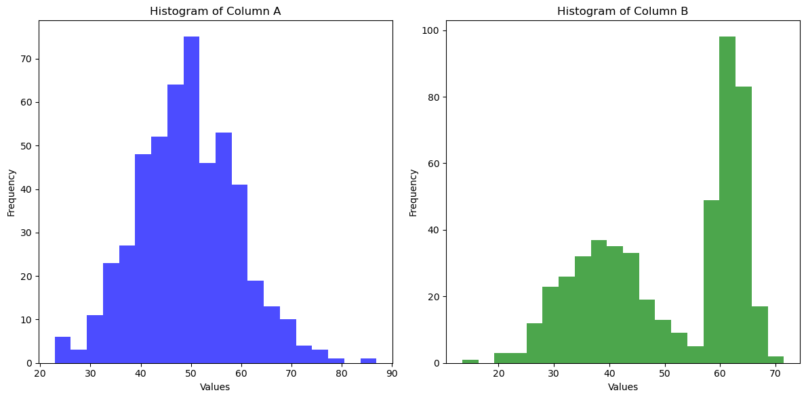

from sand_bob import generate_code, config_scadsai_llm
config_scadsai_llm()
generate_code("""Write Python code that loads the file input_data/data.csv,
determines if columns 'A' and 'B' are significantly different and
prints out 'yes' in case the p-value < 0.05 and 'not sure' otherwise.""",
dependencies=["pandas", "scipy"],
input_host_path="./input_data",
n_parallel=3,
n_iterative=3,
final_touch=True
)
# Load the CSV file into a DataFrame
df = pd.read_csv('input_data/data.csv')
# Plot histograms for columns "A" and "B"
plt.figure(figsize=(12, 6))
plt.subplot(1, 2, 1)
plt.hist(df['A'], bins=20, color='blue', alpha=0.7)
plt.title('Histogram of Column A')
plt.xlabel('Values')
plt.ylabel('Frequency')
plt.subplot(1, 2, 2)
plt.hist(df['B'], bins=20, color='green', alpha=0.7)
plt.title('Histogram of Column B')
plt.xlabel('Values')
plt.ylabel('Frequency')
plt.tight_layout()
plt.show()
